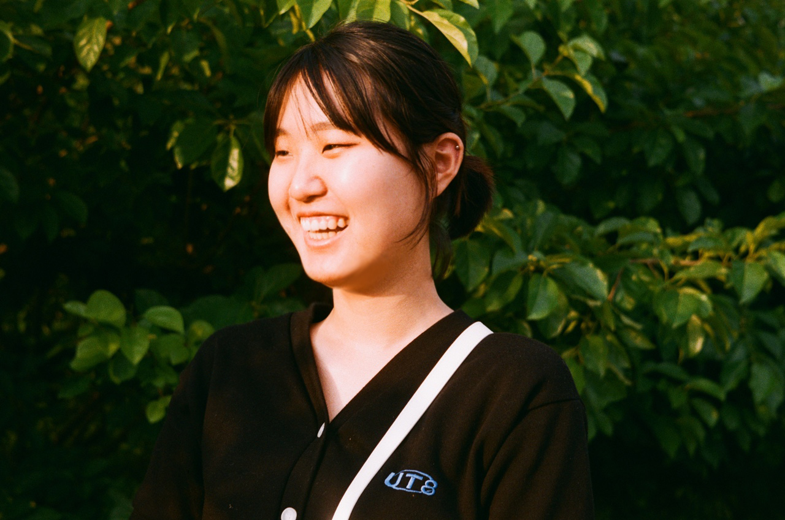

즐거움을 전하는
디자이너 곽은우 입니다.
종이접기, 모형만들기, 그림그리기 등 어린 시절부터 손으로 무언가를 만들고 주변 사람들에게 보여주는걸 좋아했습니다.
그러다보니 어른이 되어서는 도구만 컴퓨터로 달라졌을 뿐, 디자인 분야에서 창작을 지속하기에 이르렀습니다.
눈으로 받아들인 즐거움은 곧 긍정적인 마음의 에너지가 된다고 믿고 있습니다.
그렇기에 예술과 창작을 즐기는 우리의 삶은 더할나위 없이 풍족한게 아닐까요?
제 디자인이 긍정적인 에너지로서 세상 곳곳에 닿는 그날까지, 성장하는 디자이너가 되겠습니다.
그러다보니 어른이 되어서는 도구만 컴퓨터로 달라졌을 뿐, 디자인 분야에서 창작을 지속하기에 이르렀습니다.
눈으로 받아들인 즐거움은 곧 긍정적인 마음의 에너지가 된다고 믿고 있습니다.
그렇기에 예술과 창작을 즐기는 우리의 삶은 더할나위 없이 풍족한게 아닐까요?
제 디자인이 긍정적인 에너지로서 세상 곳곳에 닿는 그날까지, 성장하는 디자이너가 되겠습니다.

MORE INFORMATION!
SKILLS
Photoshop 90%
대부분의 이미지 작업, 사진보정 가능
Illustrator 90%
로고 제작, 이미지 제작 및 수정
HTML·CSS 80%
하드코딩 & 기존 웹페이지 수정가능
JQuery 70%
간단한 동작 소스 제작, 소스 활용 가능
FIGMA 80%
웹사이트 및 모바일 앱 시안 제작, 인터랙션 구현가능
PROFILE
NAME곽은우(KwakEunWoo)
CERTIFICATE웹디자인기능사
MBTIENTJ (외향 / 직관 / 논리 / 계획)
CHARCTER#도전적 #활동적 #호기심 많음 #수용력 높음 #똑부러짐 #취미부자
LIKE락음악, 고양이, 운동
HOBBY사진찍기 / 러닝 / 그림그리기 / 독서 (최근버닝 : 문목하 <돌이킬 수 있는>)